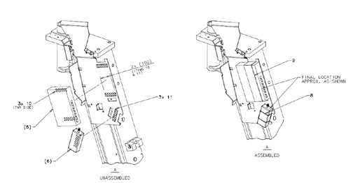
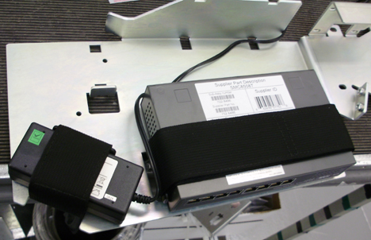

With the loop side of the velcro attached to the hook side remove the protective strip over the adhesive and mount the Ethernet switch and power supply to the mount plate such that each part is centered between the hole and cutout in the plate for each of the two components. The port side of the Ethernet switch should line up with the edge of the plate.
Illustration 1: Velcro installation

Illustration 2: Component locations
